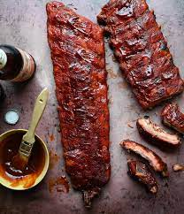

Pork Ribs

The Best Smoked Pork Ribs Ever Recipe - our 3-2-1 smoked ribs recipe delivers tender, juicy rib meat that
is perfectly seasoned, with a crispy, crunchy bark and tons of smoky flavor.
If you're new to smoking and want to try smoking ribs, this smoked ribs recipe is perfect for beginners,
because we're adding lots of tips and information like how to prepare your ribs, what ribs to buy, how to
season ribs, and more - so you can feel like an experienced grill-master, your first time and every time.
Ingredients
- Salt and Pepper
- Paprika
- Onion Powder
- Celery Salt
- Garlic Powder
- Brown Sugar
- Butter
- Apple Cider Vinegar
- Baby Back Ribs
Steps
- Pre-soak wood chips in water for ½ hour, and preheat wood chips in smoker to get to 225 degrees
Fahrenheit. Remove ribs from any packaging and pat dry, remove silver skin and trim off any excess
sloppy bits from ribs. Mix rub ingredients well, cover completely over ribs. Let your ribs come
to room temperature while wood begins to smoke and smoker comes to temperature.
- Smoke ribs on smoker for 3 hours.
- Lay out foil and lay ribs on top, adding butter, juice, and cider into foil and wrap ribs tightly
in foil. Cook in foil for 2 hours.